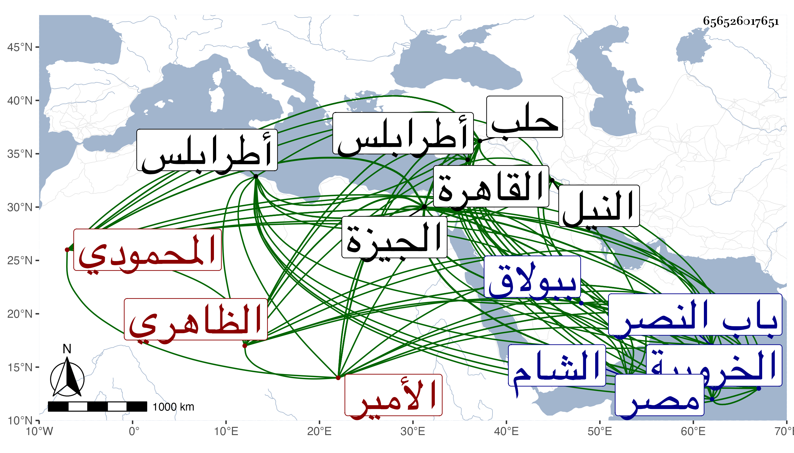

0902Sakhawi.DawLamic.ITO20230111-ara1.EIS1600.656526017651
Biography ID: 656526017651
إبراهيم بن شيخ الأمير صارم الدين بن المؤيد أبي النصر المحمودي الظاهري . ولد بالبلاد الشامية في أوائل القرن تقريبا وأمه أم ولد اسمها نوروز ماتت قبل سلطنة أبيه . ذكره ابن خطيب الناصرية وأنه كان مع أبيه وهو صغير حين كان نائب حلب ثم قدمها معه في أيام سلطنته ثم لما جرده أبوه في سنة اثنتين وعشرين لفتح البلاد القرمانية ومعه عدة من المقدمين كططر وقحماز القردمي وجقمق الأرغون شاوي ومن الطبلخاناه نزلها بالعساكر ثم رجع والنواب بطرابلس وحلب وحماه صحبته ودخل البلاد القرمانية فنزل أولا على قيصرية ففتحها ثم إلى بلاد نكدة وولى بها نوابا عن السلطان وأقام هناك ثلاثة أشهر ثم عاد إلى حلب في آن رجب ونزل بقلعتها وأقام بها إلى العشر الأخير من شعبان إلى أن رسم له بالرجوع إلى الديار المصرية فرجع بالعساكر في أواخر شعبان وبرز أبوه لملاقاته في سابع عشري رمضان وتيمن بطلعته فلم يلبث أن مات في يوم الجمعة منتصف جمادى الآخرة سنة ثلاث وعشرين مسموما وهو في حدود العشرين وكان شابا حسنا شجاعا عنده حشمة وملوكية كريما عاقلا ساكنا مائلا إلى الخير والعدل والعفة عن أموال الناس زاد غيره مع اسراف على نفسه وأنه لما لقيه الامراء بالحظارة سلم عليهم بأجمعهم وهو راكب وبمجرد أن عاين الناصري بن البارزي كاتب السر نزل له عن فرسه وتعانقا لعلمه بتمكنه عند أبيه ثم عاد الجميع في خدمته إلى منزلة العكرشه فتلاقوا مع السلطان هناك فنزل الأمراء القادمون صحبة الصارمي ثم نزل هو وقبل الأرض ثم قام ومشى حتى قبل ركاب أبيه فبكى لفرحته وبكى الناس لبكائه فكانت ساعة عظيمة ثم سارا بموكبهما إلى خانقاه سرياقوس وباتا بها ليلة الخميس تاسع عشريه وركب السلطان من الليل فرمى الطير بالبركة واصطاد ووافق قدوم تنبك ميه العلاء نائب الشام ضحى فركب في الموكب ودخل السلطان إلى القاهرة من باب النصر وقد احتفل الناس بالزينة لولده وهو بتشريف هائل وخلفه الأسرى الذين أخذهم من قلعة نكدة وهم نحو المائتين في الأغلال وكان يوما مشهودا ونزل إلى داره واستمر على حاله أولا أشهرا ودس كاتب السر في غضون ذلك لأبيه من يبغضه فيه لأنه بلغه عنه توعده إياه بالقتل فأعلم أبوه بأنه يتمنى موته لكونه يعشق بعض حظاياه ولا يتمكن منها بسببه إلا خفية وبرهن على ذلك بأمارات وعلامات وأنه صمم على قتله بالسم أو بغيره إن لم يمت عاجلا من المرض مع ما في نفسه من محبة الاستبداد وأنه يعد الأمراء بمواعيد إذا وقع ذلك فحينئذ إذن السلطان لبعض خواصه أن يعطيه ما يكون سببا لقتله من غير اسراع فدسوا إليه من سقاه من الماء الذي يطفأ فيه الحديد فلما شربه أحس بالمغص في جوفه فعالجه الأطباء مدة وندم السلطان على ما فرط منه فتقدم للأطباء في الاجتهاد في علاجه فلازموه نصف شهر إلى أن أبل قليلا من مرضه وركب في محفة إلى بيت الزيني عبد الباسط بشاطئ النيل ثم ركب إلى الخروبية بالجيزة فأقام بها وكاد أن يتعافى فدسوا عليه من سقاه ثانيا بغير علم أبيه فانتكس واستمر إلى خامس عشري جمادى الأولى فتحول يومئذ من الخروبية إلى الحجازية ببولاق ونزل له أبوه لعيادته فيها فلما كان في ثالث عشر جمادى الثانية عادوا به إلى القلعة وهو محمول على الأكتاف لعجزه عن الركوب في المحفة فمات في ليلة الجمعة خامس عشره فاشتد جزع أبيه عليه إلا أنه تجلد وأسف الناس كافة على فقده وأكثروا الترحم عليه وشاع بينهم أن أباه سمه إلا أنهم لا يستطيعون التصريح بذلك ولم يعش أبوه بعده سوى ستة أشهر وأياما كدأب من قتل أباه أو ابنه على الملك فتلك عادة مستقرة وطريقة مستقرأة قاله شيخنا قال وصار الذين حسنوا له ذلك يبالغون في ذكر معايبه وينسبونه إلى الاسراف والتبذير والمجاهرة بالفسق من اللواط والزنا والخمر والتعرض لحرم أبيه وغير ذلك مما كان بريئا عن أكثره بل يختلقون أكثره ليتسلى أبوه عن مصابه ودفن بالجامع المؤيدي وحضر أبوه الصلاة عليه يوم الجمعة مع عدم نهضته للقيام وإنما يحمل على الأكتاف حتى يركب ثم يحمل حتى ينزل وأقام به إلى صلاة الجمعة وخطب به ابن البارزي خطبة حسنة سبك فيها قوله صلى الله عليه وسلم تدمع العين ويحزن القلب ولا نقول ما يسخط الرب وإنا بك يا إبراهيم لمحزونون فأبكى السلطان ومن حضر ثم عاد إلى القلعة وأقام القراء يقرؤون على قبره سبع ليال ولم يتفق أن السلطان بعد ذلك دخل المؤيدية ووقع الخلل في أهل دولته واحدا بعد واحد ولم يتهن لهم عيش بجمعهم ومات ابن البارزي أيضا قبل استكمال أربعة أشهر من السنة رحمه الله وإيانا .
